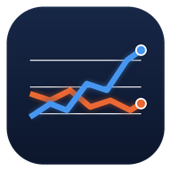

Trading-Labor
Kann eine KI Aktienkurse besser vorhersagen als der Zufall? Hier wird das ehrlich gemessen – ohne echtes Geld.
So funktioniert der Test
1 · Vorhersage am Wochenende
Claude und ChatGPT schätzen für jede Aktie, wie wahrscheinlich sie in der kommenden Woche steigt (z. B. „60 %“). Die Schätzung wird vor Börsenstart mit Zeitstempel gespeichert und nie geändert.
2 · Die Woche läuft
Gemessen wird vom Montag-Eröffnungskurs bis Freitag-Schluss. Niemand kann nachträglich schummeln.
3 · Auswertung samstags
Verglichen wird mit einfachen Regeln: Münzwurf, „immer kaufen“ und „was zuletzt stieg, steigt weiter“. Gut ist die KI nur, wenn sie diese schlägt.
Zeitplan
Wer sagt besser voraus?
Erste Werte nach dem ersten Samstag. Ein Monat ist nur ein erster Eindruck – Glück spielt noch eine große Rolle.
Gewinn, wenn man den Tipps gefolgt wäre (ohne Kosten, nur als Gedankenspiel)
Je Woche: Aktien mit „steigt eher“ minus Aktien mit „fällt eher“, jeweils im Vergleich zu ihrem Index. Über 0 = Tipps waren nützlich.
Tipps für diese Woche
Nachrichten-Test (täglich)
Jeden Abend lesen zwei KI-Modelle (Claude Haiku und das größere Claude Sonnet) dieselben Schlagzeilen zu 20 US-Aktien und schätzen, ob sie dem Kurs am nächsten Tag helfen oder schaden. So sehen wir auch, ob ein größeres Modell besser ist. Gemessen wird von der Eröffnung bis zum Schluss des Folgetags.
Was bisher getestet wurde (abgeschlossen)
Begriffe einfach erklärt
- Trefferquote
- Wie oft die Richtung stimmte (steigt/fällt). 50 % schafft auch ein Münzwurf. Ab etwa 55 % wird es interessant.
- Brier-Wert
- Misst, wie gut die Prozent-Schätzungen sind. Kleiner ist besser. Ein Münzwurf (immer 50 %) liegt bei 0,25.
- Rang-Treffer (IC)
- Hat die KI die Aktien in die richtige Reihenfolge gebracht – also die stärkeren vor die schwächeren? Über 0 ist gut.
- Zufallstest
- Wie leicht das Ergebnis auch Glück sein könnte. Unter 10 % = eher kein Zufall.
- R
- Gewinn/Verlust eines Trade-Tipps gemessen am geplanten Risiko (Stop). +1 R = so viel gewonnen, wie man riskiert hätte.
Daten: GitHub Actions, Kurse über Yahoo Finance, Nachrichten über Google News. Alles im Repo chriizz0/trading-bot. Vergangene Treffer sind kein Beweis für künftige. Keine Anlageberatung.